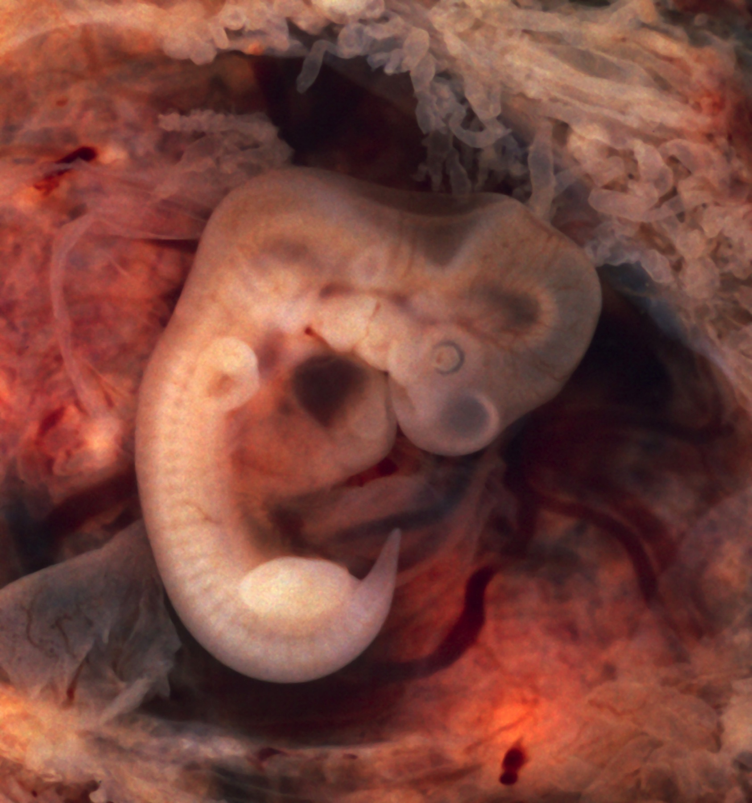

Página 4 · Parte A · Mobília
Tuba: onde mais implanta e onde mais rompe
Ampola “ganha” a implantação. Istmo “ganha” a ruptura. Se você simetrizar as duas porções, a banca te pega nos dois lados da pergunta.
A tuba tem divisões com clínica diferente
A tuba uterina tem divisões topográficas com aplicações clínicas distintas. Gestação ectópica = implantação fora da cavidade uterina; a tuba é o sítio mais frequente.
Ampola: onde mais implanta
Na porção ampular ocorre o maior número de implantações de gestação ectópica.
Onde mais implanta na tuba? Na ampola.
Istmo: onde mais rompe — e por quê
A maioria dos quadros de gestação ectópica rota ocorre no istmo da tuba.
Onde mais rompe? No istmo.
Mecanismo: a porção ístmica é mais fina que a ampular; o crescimento gestacional não cabe e a parede cede. A ampola é mais espessa e comporta crescimento maior antes da ruptura.
Par de prova: ampola = implanta mais · istmo = rompe mais.
Fator tubário, hidrossalpinge e DIP
Aplicação à infertilidade de fator tubário: alterações tubárias (ex.: hidrossalpinge, obstrução tubária) são fatores de infertilidade. Na DIP, a tuba é sítio de acometimento relevante. O núcleo cobrável prioritário, porém, continua o par implanta na ampola / rompe no istmo.

Peça real: tuba aberta com embrião e vilosidades — sítio mais frequente de ectópica.
Tubal pregnancy with embryo. By Ed Uthman, MD. Public domain. Source: https://commons.wikimedia.org/wiki/File:Tubal_Pregnancy_with_embryo.jpg
Quiz — fixação
Maior número de implantações ectópicas tubárias:
- Gabarito B. A porção ampular é o sítio de maior número de implantações ectópicas.
- (A) o istmo é onde mais rompe, não onde mais implanta.
- (C) fundo uterino é implantação eutópica (normal), não ectópica tubária.
- (D) colo é sítio de rastreamento citológico, não de ectópica tubária.
- Por que cair em A: o par implanta/rompe é simétrico na memória; sem o mecanismo da espessura, trocam-se os dois.
Por que o istmo rompe mais?
- Gabarito B. O istmo é a porção mais fina da tuba; o crescimento gestacional não cabe e a parede cede.
- (A) mucosa secretora não explica ruptura — é espessura da parede.
- (C) drenagem venosa é tema de outra página, sem relação com ruptura tubária.
- (D) o sítio do Papanicolaou é o colo, não o istmo tubário.
- Por que cair em A: “mucosa” soa biológico e seduz, mas a chave é mecânica (espessura × volume).